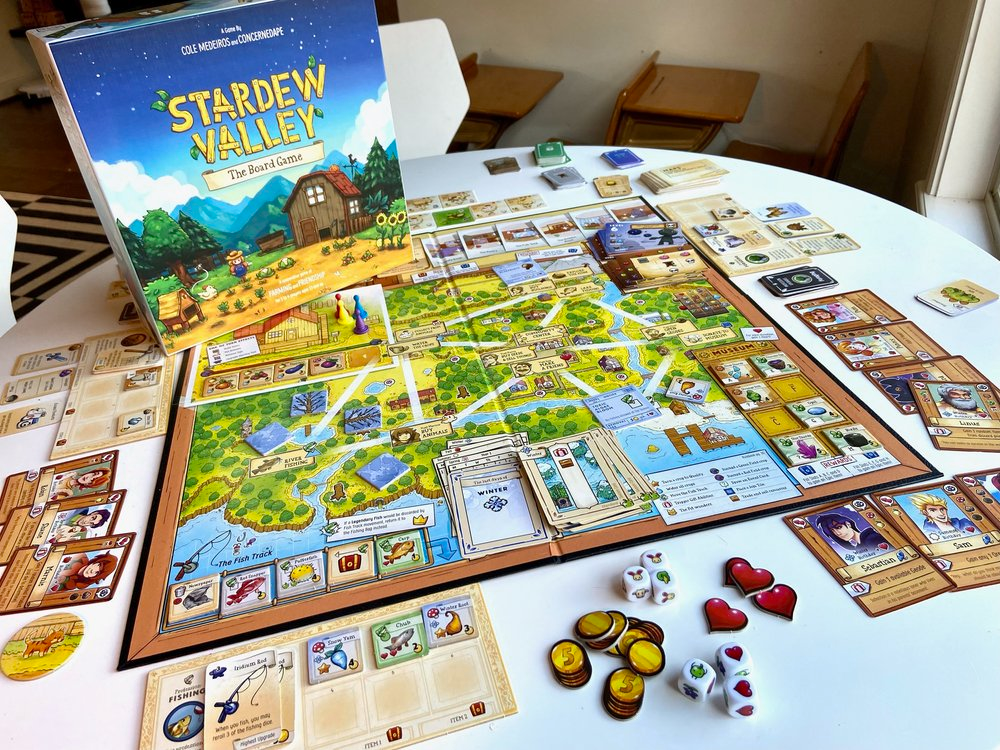

A comunidade do Stardew Valley é enorme e acolhedora, principlamente porque o criador é bastante ativo e ouvinte sobre as mudanças e necessidades do jogo. Apesar de Stadew Valley ser um jogo bem completo e recheado de diversão, a comunidade ainda auxiliar na criação de mods (modificações) que adiconam conteúdo ao jogo, desde o mais simples ao mais avançado. Um dos mais conhecidos e completos mods é o Stardew Valley Expanded , que adiciona diversas regiões, NPCs, história e itens:

Outro mod com as mesmas propostas é o Downtown Zuzu , que adiciona a Cidade de Zuzu, uma cidade que apenas é contada na história original do jogo, mas que não é acessível sem esse mod:
E não para por aí, a diversão de Stardew Valley está além das fronteiras do jogo, pois existe também um jogo de tabuleiro inspirado no prório jogo, o Stardew Valley: Board Game, que até então não possui tradução.
